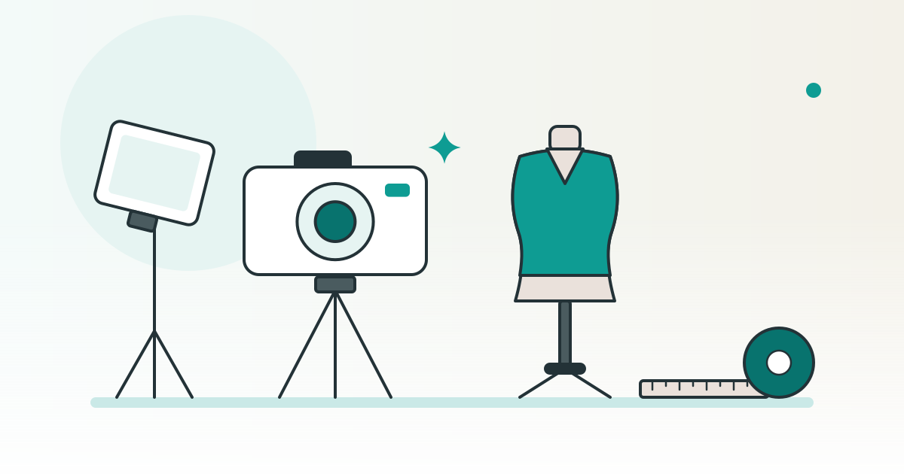

SHOPKIT コラム
レディース服の商品写真の撮り方着用・平置き・サイズ感の見せ方

服の商品写真を用意するときは、見栄えに加えて、丈や袖の形、透け感を選ぶ人にどう伝えるかを考えましょう。平置き・着用・細部の写真を採寸表や説明と対応させる方法と、撮影や掲載の前に確かめる利用条件を整理します。
この記事は、完成品のネットショップを販売している SHOPKIT が書いています。
服の写真は、平置き・着用・細部で役割を分ける
撮影する前に、その服を選ぶときに迷いそうな点を書き出します。ブラウスなら丈や袖、パンツなら腰回りや裾など、写真で見せたい場所を決めてください。平置き、着た状態、近くから見る細部を、それぞれ別の役割で用意する形を考えましょう。
| 写真の見せ方 | 見せたい内容 | 説明と照らすところ |
|---|---|---|
| 平置き | 服全体の輪郭、丈、袖や裾の形 | 採寸した向き、測る位置、選べる色とサイズ |
| 着用 | 体に沿う形、袖口や裾が来る位置 | 着た人の身長、着用サイズ、合わせた服 |
| 細部 | 生地の表面、裏地、留め具、縫い目 | 素材や手入れの説明、開閉方法、付属品 |
写真の枚数を先にそろえるより、選ぶ際の疑問に対応できているかを見ていきます。同じ正面の写真が続くなら、説明したい場所が重複していないかを確認しましょう。背景や画像の枠など、商品写真全般の準備は関連の記事へ進めます。
関連：ネットショップの商品写真の撮り方｜一覧でそろって見える条件と使えない画像
平置きは、採寸の値と同じ向きで撮る
平置きは、服を床や台に広げて撮る見せ方です。採寸した状態と写真の状態を合わせ、表と裏、上下の向きが分かるように整えましょう。身幅を測る線や着丈の始点などを、写真と採寸表で照らせるようにします。
袖や裾が折れ込んでいる場合は、形を確認できるよう広げます。ウエストのゴムや伸びる部分は、引っ張った状態か、そのままの状態かを説明とそろえてください。写真を撮るために後ろで留めたり、布をたくし込んだりしたときは、どの部分を調整したかを記録し、調整していない形も示せるかを見直します。
服の真上から撮ることを基準にして、画面の端へ引き伸ばされたように見えないかを見比べましょう。撮影後は、写真の輪郭を実物と照らします。丈や身幅を細く見せるために画像の形を変えることは避けてください。
裏地、透ける部分、取り外せるベルトなどは、全体写真と別に確認できる写真を用意しましょう。平置きの写真だけで着た人への適合を決めず、実寸や着用時に確認した内容と合わせて案内します。
関連：服のネットショップを始めるには｜品質表示・原産国・サイズの伝え方
着用の写真には、着た人の身長と着たサイズを添える
着用写真は、どの色とサイズを着ているかを特定して残します。掲載してよいと確認した身長などの情報を添え、着用者の例として示しましょう。見た人が同じ丈や着心地になると断定せず、服そのものの寸法も確認できるようにします。
姿勢は、裾や袖の位置が分かる立ち方を基準にします。正面に加えて、横から見た厚みや、後ろの丈が分かる向きも検討してください。腕を大きく上げた写真だけになっていないか、ウエストを隠す着方だけになっていないかを見直します。
ブラウスの裾をボトムへ入れて撮るなら、入れていない状態の丈も見せる形を考えましょう。羽織りは前を開けた状態と閉じた状態、パンツは裾を折ったかどうかを、写真の説明に結び付けます。体に合わせるために留め具などで形を調整した写真は、その条件が伝わるかを確かめてください。
合わせたインナー、靴、アクセサリーが販売に含まれない場合は、購入する内容と区別して書きます。着用写真の品番・色・サイズと、購入時に選ぶ項目を照らしてから掲載しましょう。
色を実物に近づけるために、明るさと背景をそろえる
撮影する場所、背景、光の当たり方を決め、同じ服の色違いは条件をそろえて撮る方法を考えましょう。光源や背景を変えた写真が混ざるときは、どの写真で色を確かめてほしいかを見直します。撮った画像と実物を見比べ、違う色に見える場合は撮影条件から確かめてください。
生地の細部は、凹凸や編み目を見せる写真と、服全体の形を見る写真を分けると整理できます。透け感を見せたいときは、どの部分を撮り、下に何を置いたかも記録しましょう。実際に確認していない通気性や肌触りを、写真の印象だけで書き加えないようにします。
色を濃くしたり生地を滑らかにしたりする加工で、実物から離れていないかも確認してください。撮影後の画像と元の写真、対象の服を照らして、購入する物の色や質感を説明できる状態を目指します。
消費者庁の景品表示法関係の資料一覧には、インターネットでの商品表示に関する資料へのリンクがあります。
写真、商品名、素材の説明、付属品の案内を並べて見直しましょう。個別の表示の適否は、掲載する画面と資料を添えて担当窓口で確かめてください。
モデルの写真を使うときは、許可と借りた写真の扱いを確かめる
文化庁の他人の著作物を使う際の案内は、著作権の確認の流れを示し、肖像権など別の権利や利用条件の確認も必要となる場合があると説明しています。
撮影を頼む場合は、撮った人や写真を提供する相手との間で、商品ページ、広告、SNSなど使いたい場所を分けて確認します。切り抜き、文字の追加、別の商品ページへの再利用も、許可された範囲を確かめましょう。使用する写真を特定し、条件の分かる資料を一緒に残してください。
写る人には、服の販売に使う目的と掲載先、身長など一緒に載せる情報を示して確認します。撮影に参加したことだけで、別の広告や継続的な掲載まで了解済みと扱わないようにしましょう。仕入れ先から受け取った写真についても、モデルを含めて利用条件を確認できるかを尋ねます。
個人情報保護委員会のガイドラインの通則編では、生存する本人を見分けられる映像を、個人情報に当たる例として示しています。
掲載する写真と添える情報を分け、確認のために受け取った連絡先などが画像へ紛れ込んでいないかを見直してください。掲載を取り下げたいという連絡の窓口も決めておきます。実際の写真や情報の法的な扱い、契約条件が判断できないときは、資料をそろえて窓口へ相談しましょう。
お店を買って始めるときに、受け取る写真を確かめる
商品写真を自分で用意する方法に加えて、準備済みのお店を選ぶ方法もあります。SHOPKITは、販売商品と店舗の準備を整え、引継ぎ後に販売を始められる状態でお渡しするサービスです。
候補のお店では、どの商品にどの写真が対応するか、着用したサイズや身長などの情報があるかを購入前に確かめましょう。写真の受け取り方、加工や別の掲載先で使える範囲、利用条件の資料についても質問してください。準備済みのお店という説明だけで、希望する使い方がすべて含まれると判断しないようにします。
仕入れ先の写真と商品仕様の対応を確かめたい場合は、関連の記事でも確認する内容を整理しています。
関連：韓国のレディース服のネットショップを始める｜仕入れ・サイズ・返品
よくある質問
レディース服の商品写真は、平置きだけでよいですか？
服の輪郭を平置きで確認し、丈や袖の位置は着用写真や実寸と合わせて伝える方法を考えましょう。細部は、素材や付属品の説明と対応させます。
着用写真には、着た人の身長も載せますか？
着た人に掲載してよいと確認した情報を、着用サイズと一緒に示しましょう。着用者の例として扱い、同じ丈や着心地になると断定しないようにします。
借りた商品写真は、自分のお店で使えますか？
提供元に、掲載先や加工、再利用などの条件を確かめてください。写る人への確認も分けて整理し、条件の分かる資料を残しましょう。
※ この記事のSHOPKITの記載は、2026年10月15日時点のサービスページによります。文化庁と個人情報保護委員会の資料は2026年10月27日に確認しました。消費者庁の資料一覧は2026年10月26日に確認しました。最新の権利・表示・個人情報の扱いは、公的な案内と担当窓口でご確認ください。